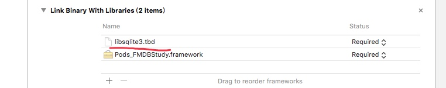
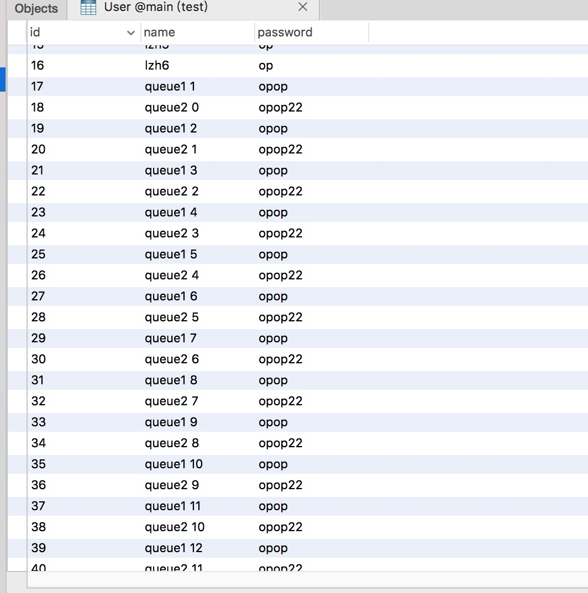

AFNetworking的简单使用
最近看学习一些项目代码到了使用AFNetworking的项目，所以去学习了一下，这里简单的总结一下，AFNetworking的使用方法。
AFNetworking简介
AFNetworking是一个很受大众欢迎的网络框架，可以帮助管理和处理网络任务请求，包括下载、上传、get、post请求等。
安装
AFNetworking的安装可以使用CocoaPods在文件中加入：
pod 'AFNetworking'
并执行 pod install就可以了。有一点要注意的是最新版本为3.1这个版本删除了基于NSURLConnectionOperation的AFHTTPRequestOperationManager的支持。转而使用基于NSURLSession封装的AFHTTPSessionManager。
网络监听
AFNetworking提供了一个监听网络状态的方法，来实时的判断当前网络是否良好。具体代码如下：
// 如果要检测网络状态的变化,必须用检测管理器的单例的startMonitoring
/**
AFNetworkReachabilityStatusUnknown = -1, // 未知
AFNetworkReachabilityStatusNotReachable = 0, // 无连接
AFNetworkReachabilityStatusReachableViaWWAN = 1, // 3G 花钱
AFNetworkReachabilityStatusReachableViaWiFi = 2, // 局域网络,不花钱
*/
[[AFNetworkReachabilityManager sharedManager] startMonitoring];
[[AFNetworkReachabilityManager sharedManager] setReachabilityStatusChangeBlock:^(AFNetworkReachabilityStatus status) {
debugLog(@"%ld",(long)status);
}];
根据当前网络状态会输出所对应的状态数值。
下载
//session的默认配置
NSURLSessionConfiguration *configuration = [NSURLSessionConfiguration defaultSessionConfiguration];
//根据配置创建管理者
AFURLSessionManager *manager = [[AFURLSessionManager alloc] initWithSessionConfiguration:configuration];
NSURL *url = [NSURL URLWithString:@"http://smartdsp.xmu.edu.cn/memberpdf/fuxueyang/cvpr2017/cvpr2017.pdf"];
//根据url创建请求对象
NSURLRequest *request = [NSURLRequest requestWithURL:url];
//创建下载任务
NSURLSessionDownloadTask *downloadTask = [manager downloadTaskWithRequest:request progress:nil destination:^NSURL * _Nonnull(NSURL * _Nonnull targetPath, NSURLResponse * _Nonnull response) {
//设置下载路径
NSURL *documentsDirectoryURL = [[NSFileManager defaultManager] URLForDirectory:NSDocumentDirectory inDomain:NSUserDomainMask appropriateForURL:nil create:NO error:nil];
//返回文件存放在本地的地址
return [documentsDirectoryURL URLByAppendingPathComponent:[response suggestedFilename]];
} completionHandler:^(NSURLResponse * _Nonnull response, NSURL * _Nullable filePath, NSError * _Nullable error) {
//下载完成后调用方法
debugLog(@"File download to:%@ , %@",filePath,error);
}];
//开始下载任务
[downloadTask resume];
get请求
NSString *urlString = @"https://www.weifar.com/api/ExamQuestion/id";
NSDictionary *parameters = @{@"id":@6};
AFHTTPSessionManager *manager = [AFHTTPSessionManager manager];
//根据上述参数和请求地址来发送请求
[manager GET:urlString parameters:parameters progress:^(NSProgress * _Nonnull downloadProgress) {
debugLog(@"%@",downloadProgress);
} success:^(NSURLSessionDataTask * _Nonnull task, id _Nullable responseObject) {
//成功获取数据后，进行处理
if (responseObject) {
NSArray *a = responseObject[@"Questions"];
NSDictionary *dic = a[0];
NSString *str = dic[@"BlockDescription"];
debugLog(@"%@",str);
}
} failure:^(NSURLSessionDataTask * _Nullable task, NSError * _Nonnull error) {
//请求失败，打印错误
debugLog(@"%@",error);
}];
总结
以上就是AFNetworking的基本使用，还有其他的一些功能由于没有合适的接口可以进行操作，暂且先搁置下。具体的操作可以参考官方的AFNetworkingAPI文档,
FMDB的使用方法
最近再看其它大牛写的项目代码，发现许多用到了FMDB，所以去了解了一下。
FMDB简介
FMDB是一个第三方的开源库，我们可以通过cocopods搜索并整合到项目里面，FMDB其实就是对SQLite的API进行了封装，加上了面向对象的思想，让我们不必使用繁琐的C语言API函数，比起直接操作SQLite更加方便。
并且FMDB 同时兼容 ARC 和非 ARC 工程，会自动根据工程配置来调整相关的内存管理代码。
使用方法
本文使用方法，均参考FMDB的github项目文档https://github.com/ccgus/fmdb
引入相关文件
因为是对sqlite的封装所以我们在项目中需要引入它的库。

之后在文件中导入它的头文件：
#import "FMDB.h"
建立数据库
建立数据库只有简单的一句代码，如果当前路径不存在所需的数据库则会自动创建，若存在则会获取到。当路径为字符（@“”）时，一个空的数据库将被创建在临时的位置，数据库关闭时候将被自动删除。路径为NULL时空数据库会被放在内存中，关闭时也将自动被删除。具体信息可以参见：http://www.sqlite.org/inmemorydb.html
#define PATH_OF_DOCUMENT [NSSearchPathForDirectoriesInDomains(NSDocumentDirectory, NSUserDomainMask, YES) objectAtIndex:0]
_path = [PATH_OF_DOCUMENT stringByAppendingPathComponent:@"test.db"];
//创建数据库
FMDatabase *db = [FMDatabase databaseWithPath:_path];
打开数据库
在对数据库进行交互时，必须要先打开它。如果打开失败，可能是权限不足或者资源不足。
if (![db open]) {
// [db release]; // uncomment this line in manual referencing code; in ARC, this is not necessary/permitted
db = nil;
return;
}
执行更新（update）操作
FMDB中除了select为查询（query）以为都为更新操作。
例如我们执行一个插入操作的完整步骤为：
static int idx = 1;
FMDatabase *db = [FMDatabase databaseWithPath:_path];
if ([db open]) {
NSString * sql = @"insert into User (name, password) values(?, ?) ";
NSString *name = [NSString stringWithFormat:@"lzh%d",idx++];
BOOL result = [db executeUpdate:sql,name,@"op"];
if (!result) {
debugLog(@"error to insert data");
}else{
debugLog(@"succ to insert data");
}
[db close];
}
查询操作：
FMDatabase *db = [FMDatabase databaseWithPath:_path];
if ([db open]) {
NSString *sql =@"select * from User";
FMResultSet *result = [db executeQuery:sql];
while ([result next]) {
int userId = [result intForColumn:@"id"];
NSString *name = [result stringForColumn:@"name"];
NSString *pass = [result stringForColumn:@"password"];
debugLog(@"user id = %d, name = %@, pass = %@", userId, name, pass);
}
[db close];
}
删除操作：
static int idx = 1;
FMDatabase *db =[FMDatabase databaseWithPath:_path];
if ([db open]) {
NSString *sql = @"delete from User where id = ?";
BOOL result = [db executeUpdate:sql , @(idx++)];
if (!result) {
debugLog(@"error to delete db data");
} else {
debugLog(@"succ to deleta db data");
}
[db close];
}
我们可以看到执行sql语句的时候用的都是executeUpdate：方法。
执行查询操作
查询操作与上面的有点区别，我们需要用FMResultSet来存储我们的查询结果，并调用它的next：方法来对数据进行逐行操作：
FMDatabase *db = [FMDatabase databaseWithPath:_path];
if ([db open]) {
NSString *sql =@"select * from User";
FMResultSet *result = [db executeQuery:sql];
while ([result next]) {
int userId = [result intForColumn:@"id"];
NSString *name = [result stringForColumn:@"name"];
NSString *pass = [result stringForColumn:@"password"];
debugLog(@"user id = %d, name = %@, pass = %@", userId, name, pass);
}
[db close];
}
上面代码可以发现执行sql语句变为executeQuery:方法，该方法会将结果返回为FMResultSet类型，之后我们需要调用stringForColumn:对结果进行解析。
FMDB提供如下多个方法来获取不同类型的数据：
intForColumn:
longForColumn:
longLongIntForColumn:
boolForColumn:
doubleForColumn:
stringForColumn:
dateForColumn:
dataForColumn:
dataNoCopyForColumn:
UTF8StringForColumn:
objectForColumn:
也可以按照列的索引对数据进行获取，{type}ForColumnIndex:
数据参数
我们可以在sql语句中，用？表示执行语句的参数，然后在 executeUpdate：方法来将?所指代的具体参数传入，例如上面的代码：
NSString * sql = @"insert into User (name, password) values(?, ?) ";
NSString *name = [NSString stringWithFormat:@"lzh%d",idx++];
BOOL result = [db executeUpdate:sql,name,@"op"];
线程安全
FMDatabase这个类是线程不安全的，如果在多个线程同时使用一个FMDatabase实例，会造成数据混乱问题。所以，提供了一个FMDatabaseQueue并且使用它来对多个线程间进行交互，FMDatabaseQueue对象将通过接入多个线程进行同步和整合。
使用的方法也很简单：
首先创建一个数据库path来初始化FMDatabaseQueue，然后就可以将一个闭包 (block) 传入 inDatabase 方法中。
FMDatabaseQueue *queue = [FMDatabaseQueue databaseQueueWithPath:aPath];
[queue inDatabase:^(FMDatabase *db) {
[db executeUpdate:@"INSERT INTO myTable VALUES (?)", @1];
[db executeUpdate:@"INSERT INTO myTable VALUES (?)", @2];
[db executeUpdate:@"INSERT INTO myTable VALUES (?)", @3];
FMResultSet *rs = [db executeQuery:@"select * from foo"];
while ([rs next]) {
…
}
}];
按照上面的方法我们可以创建多个线程来异步的对数据库进行操作：
FMDatabaseQueue *queue = [FMDatabaseQueue databaseQueueWithPath:_path];
dispatch_queue_t q1 = dispatch_queue_create("queue1", NULL);
dispatch_queue_t q2 = dispatch_queue_create("queue2", NULL);
dispatch_async(q1, ^{
for (int i =1; i<100; ++i) {
[queue inDatabase:^(FMDatabase *db){
NSString *sql = @"insert into User (name, password) values(?, ?)";
NSString *name = [NSString stringWithFormat:@"queue1 %d", i];
BOOL result = [db executeUpdate:sql,name,@"opop"];
if (!result) {
debugLog(@"error to add db data: %@", name);
} else {
debugLog(@"succ to add db data: %@", name);
}
}];
}
});
dispatch_async(q2,^{
for (int i = 0; i < 100; ++i) {
[queue inDatabase:^(FMDatabase *db) {
NSString * sql = @"insert into user (name, password) values(?, ?) ";
NSString * name = [NSString stringWithFormat:@"queue2 %d", i];
BOOL result = [db executeUpdate:sql, name, @"opop22"];
if (!result) {
debugLog(@"error to add db data: %@", name);
} else {
debugLog(@"succ to add db data: %@", name);
}
}];
}
});
执行后可以发现数据库中的部分表数据如下：

两个线程可以异步执行互不干扰。
上面数据库的显示 使用的是Navicat，也有其它的数据库管理软件可以显示。
总结
FMDB是一个在iOS上简化sqlite API的第三方库，对sqlite进行了很有好的封装，便于维护与增加效率。

Copyright © 2017 Powered by LZH, Theme used GitHub CSS.